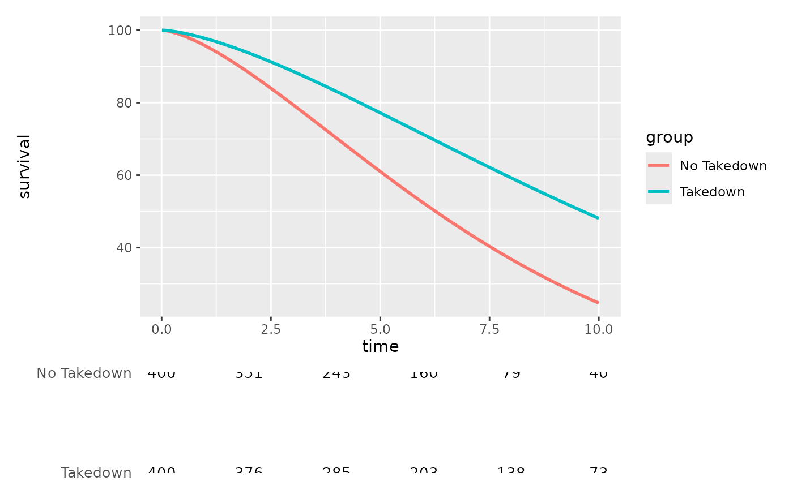

Sample Subject-Level Cohort Behind the Hazard Examples
Source:R/hazard-plot.R
sample_hazard_cohort.RdReturns the subject-level survival data that sample_hazard_empirical()
simulates internally and then discards. Use it when a hazard figure needs a
numbers-at-risk table: hv_atrisk() counts subjects still under observation
and therefore cannot work from sample_hazard_data(), which is a prediction
grid with no subjects in it.
Usage
sample_hazard_cohort(
n = 500,
time_max = 10,
groups = NULL,
shape = 1.5,
scale = 8,
seed = 42L
)Arguments
- n
Number of simulated subjects per group. Default
500.- time_max
Scale of the follow-up window (years). Default
10. Note that this is not a hard maximum on the returnedtime: follow-up is administratively truncated at1.2 * time_max, matching the cohortsample_hazard_empirical()fits to, so returned times run up to12at the default. It is the upper end of the grid insample_hazard_data()and of the bins insample_hazard_empirical().- groups
NULLfor a single group, or a named numeric vector of hazard multipliers matching those passed tosample_hazard_data(). Names must be present, non-empty and distinct; multipliers must be finite and greater than zero.- shape
Weibull shape parameter. Default
1.5.- scale
Weibull scale parameter (years). Default
8.0.- seed
Random seed. Default
42.
Value
A data frame with one row per subject and columns time (follow-up
time, years) and status (1 event, 0 censored), plus a factor group
column when groups is not NULL.
Details
For a given n, time_max, groups, shape, scale and seed this draws
the same cohort that sample_hazard_empirical() fits its Kaplan-Meier
overlay to, so the counts and the overlay describe the same subjects. Event
times are Weibull, censoring is uniform on [0.2, 1.5] * time_max, and
follow-up is administratively truncated at 1.2 * time_max. When groups is
supplied each level is an independent draw of n subjects, matching
sample_hazard_empirical()'s balanced-arms convention.
Note that sample_hazard_data() is an analytic Weibull curve evaluated at
the same parameters — it is not fitted to this cohort. The two share a
generative model, not an estimation step, so a figure combining them should
not be captioned as a model fit to these subjects.
Examples
coh <- sample_hazard_cohort(n = 500, time_max = 10)
nrow(coh)
#> [1] 500
mean(coh$status)
#> [1] 0.58
# Numbers at risk under a parametric hazard figure. The cohort and the
# curve share n / shape / scale / seed, so the counts belong under it.
arms <- c("No Takedown" = 1.0, "Takedown" = 0.65)
coh2 <- sample_hazard_cohort(n = 400, time_max = 10, groups = arms)
haz <- hv_hazard(
sample_hazard_data(n = 400, time_max = 10, groups = arms),
group_col = "group"
)
hv_atrisk_compose(
plot(haz),
hv_atrisk(coh2, time = "time", status = "status", group = "group",
report_times = c(0, 2, 4, 6, 8, 10))
)
